![[Graphics:Images/index_gr_2.gif]](Images/index_gr_2.gif)
| HOME | PERSONAL | PROJECTS | LINKS |
Studiamo il sitema meccanico costituito da un pendolo classico la
cui cerniera è messa un moto circolare uniforme per mezzo di da
un motore in corrente continua.
I parametri del sistema sono quindi il raggio del moto della cerniera
attorno all'asse del motore, la lunghezza del baccio e la pulsazione ω
del motore.
Si studierà infine il sistema con l'aggiunta di un ulteriore
braccio per simulare le equazioni del bipendolo in presenza di
preturbazioni: in questo caso il numero dei parametri salirà a 4.
Lo scopo della simulazione è di individuare particolari
condizioni di moto, in particolare attrattori periodici e aperiodici,
per identificare la possibilità di realizzare fisicamente il
pendolo perturbato e realizzare così un gadget che mostri
all'osservatore traiettorie caotiche. Per questo motivo si sono adottate
le seguenti approssimazioni:
l'unica massa in gioco è collocata all'estremità
dell'ultimo segmento rigido ed è posta pari ad 1, i segmenti
rigidi di fatto non hanno massa.
Una volta identificate le condizioni di moto più interessanti si
potrà passare ad una simulazione numerica con parametri fisici
più accurati per passare alla fase di realizzazione.
L'assunzione di segmenti senza massa introduce un errore nel moto
correggibile con l'opportuna calibrazione degli altri parametri:
lunghezze e massa dell'unico peso.
Sia O l'origine del nostro sistema di riferimento cartesiano, A il punto che viaggia con moto circolare attorno ad O e B l'estremo del segmento che sostiene la massa. Nel caso del bipendolo la massa sarà collocata in C, estremo libero del segmento incernierato a B.
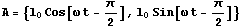
![[Graphics:Images/index_gr_5.gif]](Images/index_gr_5.gif)
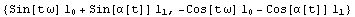
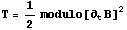
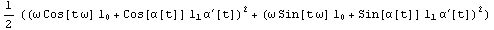
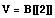
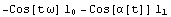
![[Graphics:Images/index_gr_11.gif]](Images/index_gr_11.gif)
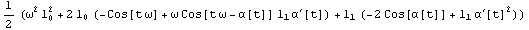
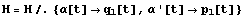
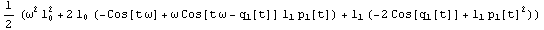
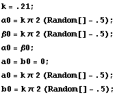
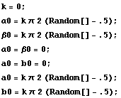
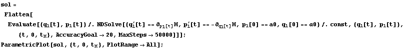
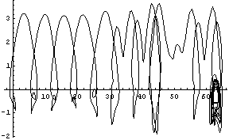
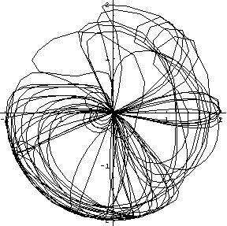
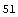
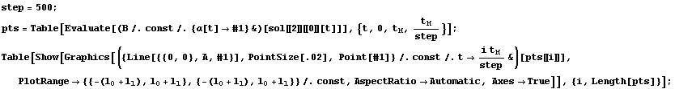
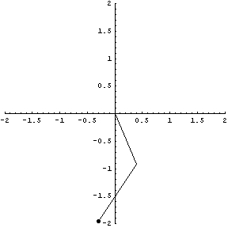
![[Graphics:Images/index_gr_314.gif]](Images/index_gr_314.gif)
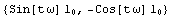
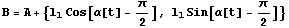
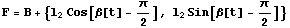
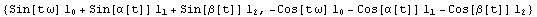
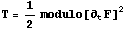
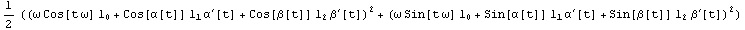
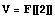
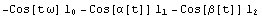
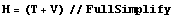
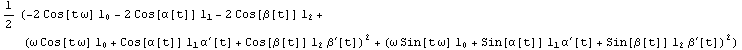
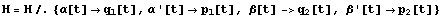
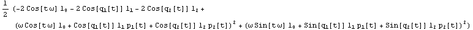
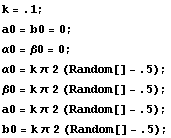
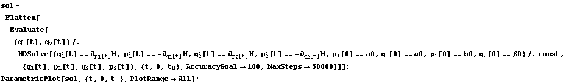
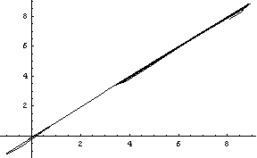
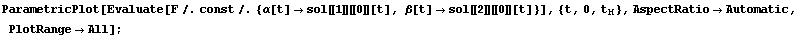
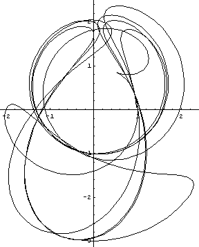
| HOME | PERSONAL | PROJECTS | LINKS |